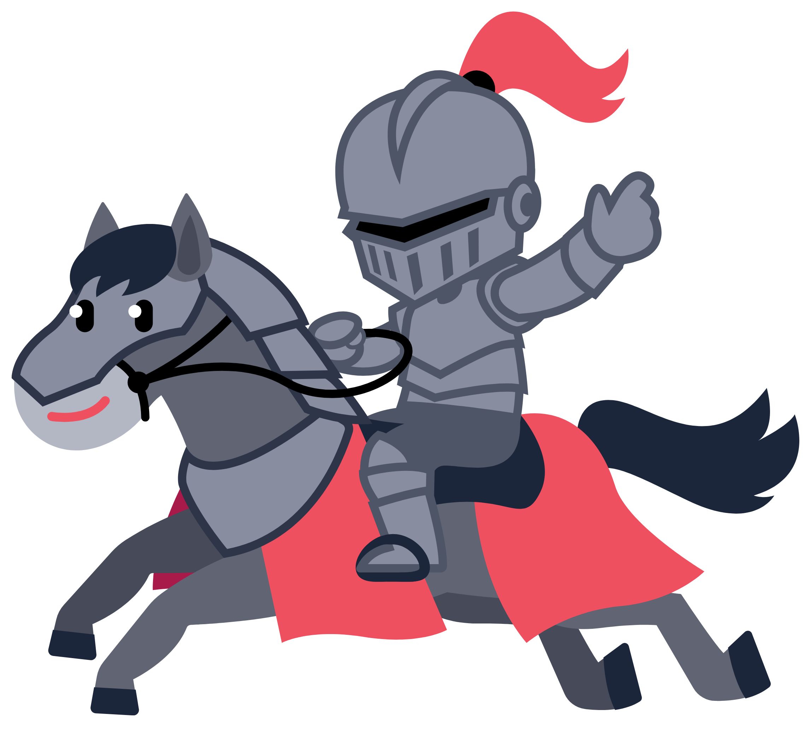
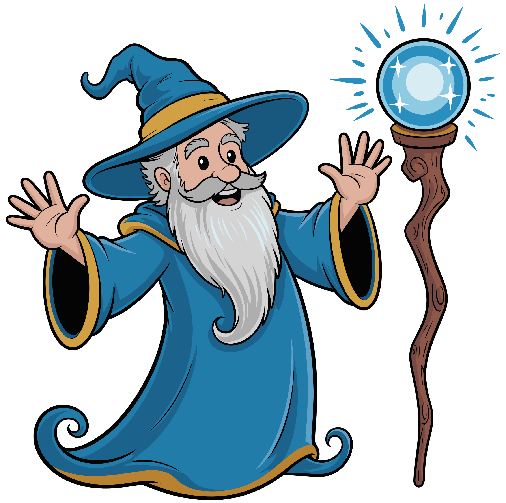

Bem-vindo à Jornada do Herói !

Bem-vindos a um universo onde o aprendizado ganha vida! A "Jornada dos Heróis" é um projeto inovador que une o currículo escolar à gamificação, Cultura Maker e Inteligência Artificial. Em vez de apenas estudar conteúdos, nossos alunos se transformaram em verdadeiros criadores de mundos, aplicando seus conhecimentos de forma colaborativa para construir uma nova civilização do zero.
O que é o Projeto?

A "Jornada do Herói" não é apenas um sistema de notas, é um ecossistema de aprendizado. Aqui, cada desafio superado, cada protótipo construído e cada problema resolvido em equipe conta para a sua evolução. Inspirado nas mecânicas dos RPGs, este projeto transforma a sala de aula em um mundo aberto onde suas ações e atividades geram experiência (XP) para evoluir suas habilidades técnicas e criativas.
Durante este ano, a sala de aula será o nosso tabuleiro de RPG. O projeto une tecnologia, Cultura Maker, pílulas de conhecimento e muita imaginação.
Os alunos vão criar seus próprios personagens (Avatares) e começar no Nível 1. Conforme estudam, participam e ajudam os colegas, eles evoluem!
Como Funciona o Sistema
As missões geram dois tipos de recompensas diferentes:
Categorias de Destaque

No projeto, todo talento é valorizado! Os pontos são divididos em categorias, para contemplar as diferentes habilidades dos alunos na Guilda:
- O Mais Sábio: O aluno (herói) com mais PP ganhos em leitura, escrita, pesquisa e tarefas de Língua Portuguesa e Ciências.
- O Mais Engenhoso: O aluno (herói) com mais PP acumulados em cálculos, resolução de problemas e tarefas de Matemática e Lógica.
- O Artista Mais Visionário: O aluno (herói) com mais PP conquistados com ideias criativas, desenhos e materiais que contribuam para a criação do mundo.
- O Herói Lendário: O grande campeão com o maior total de Pontos de Poder (PP) acumulados no final do Ano!
Fragmentos de Poder (Insígnias)

Além dos pontos, atitudes épicas rendem medalhas especiais para a ficha do aluno, algumas delas são:
- Mestre da Colaboração: Para o aluno que ajuda um colega em apuros.
- Arquiteto de Histórias / Criatividade: Para o aluno que apresenta uma ideia muito inovadora.
- Guardião da Natureza: Para o aluno que cria um ecossistema coerente e cuida do espaço de aprendizagem.
- Insígnia da Persistência: Para o aluno que não desiste diante de um desafio difícil.